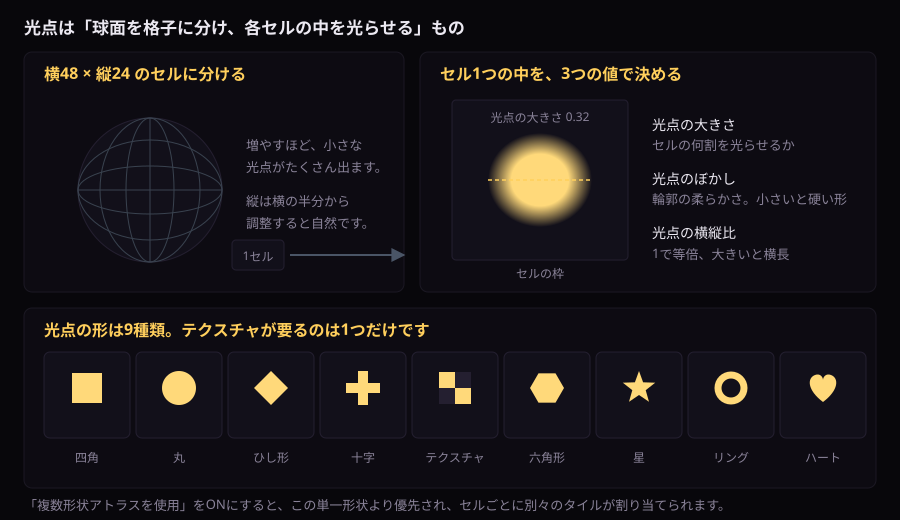

見え方を決める
光点の形・量・点滅
光点1つの形と大きさ、同時に光る割合、複数形状のアトラスです。
光点・タイル
| 表示名 | 初期値 | 効果 |
|---|---|---|
| 横方向の光点数 | 48 / 8–128 | 球面分割の横密度。増やすほど小さな光点が増えます。 |
| 縦方向の光点数 | 24 / 4–64 | 縦密度。横の約半分から調整すると自然です。 |
| 光点の大きさ | 0.32 / 0.05–0.95 | 各セル内の発光範囲です。 |
| 光点のぼかし | 0.05 | 輪郭の柔らかさ。小さいほど硬い形になります。 |
| 光点の横縦比 | 1.1 | 1で等倍、1より大きいと横長です。 |
| 光点の形状 | 四角 | 四角／丸／ひし形／十字／テクスチャ／六角形／星／リング／ハートから選択します。 |

六角形、星、リング、ハートはTexture不要です。テクスチャとアトラスはこのページの単一の光点形状と複数形状アトラス、表面の機能はワールドShader拡張で説明します。
ランダム点灯・消灯と表面処理
| 表示名 | 初期値 | 効果 |
|---|---|---|
| ランダム点滅を使用 | ON | 光点セルごとに点灯／消灯を切り替えます。 |
| 同時に点灯する割合 | 0.55 | 平均して点灯する光点の割合です。0.2で疎、0.8で密です。 |
| 点灯状態の切替速度 | 1.2 | ランダム状態を更新する速度です。 |
| 点灯・消灯のフェード | 0.12 | 切替境界を滑らかにします。小さいとパキッと切り替わります。 |
| 光点の明滅量 | 0.1 | 連続的な輝度揺らぎ量です。ランダム点滅とは別に加算されます。 |
| 光点の明滅速度 | 1.5 | 連続明滅の速さです。 |
| 面の向きで明るさを変える | OFF | 面法線と投影方向で強度を変えます。凹凸面では自然ですが計算が増えます。 |
単一の光点形状
| 選択 | 動作 |
|---|---|
| 四角 | セルに沿う標準形状です。 |
| 丸 | 中心からの距離で円形にします。 |
| ひし形 | 45度回転した菱形です。 |
| 十字 | 縦横バーを組み合わせます。 |
| テクスチャ | 「光点形状テクスチャ」の明度／Alphaをマスクとして使います。 |
| 六角形 | Textureを使わずShader内で六角形を生成します。 |
| 星 | Textureを使わず5方向の星形を生成します。 |
| リング | 中心が抜けた円環を生成します。 |
| ハート | イベント向けのハート形を生成します。 |
テクスチャは白が点灯、黒が消灯、中間色が半透明境界です。透明背景PNGも利用できます。
複数形状アトラス
「複数形状アトラスを使用」をONにすると単一形状より優先され、光点セルごとにタイルが固定ランダム配置されます。
| 表示名 | 初期値 | 効果 |
|---|---|---|
| 光点形状アトラス | なし | 複数マスクを格子状に並べたTextureです。 |
| アトラス横分割数 | 4 / 1–8 | 横方向のセル数です。 |
| アトラス縦分割数 | 2 / 1–8 | 縦方向のセル数です。 |
| 使用する形状数 | 8 / 1–64 | 左上から使用するタイル数。横×縦を超えた分は容量までに制限されます。 |
| 形状配置シード | 0 | 同じアトラスの配置パターンを変更します。 |
| シードを自動フェード | OFF | ONにすると、下の周期ごとに新しいシードへ滑らかにクロスフェードします。 |
| シード変化の周期（秒） | 20 / 1–300 | 次のシードへ完全に切り替わるまでの秒数です。サーバー時刻基準のため全員が同じタイミングで切り替わります。 |
シード値自体を補間すると配置がチラつくため、内部では旧シードと新シードそれぞれのアトラス表示をサンプリングしてブレンドしています。静止状態でも設定済みのマテリアル更新頻度でフェードが継続し、透明背景AtlasもMask値を正しく補間します。設定後は「現在の設定をマテリアルへ反映・保存」を押してください。OFF時は追加のTextureサンプリングをスキップします。
同じ設定でも、版によってパターンの出現順序が一致しない場合があります。形状の種類・パラメーターの意味・Materialの設定は変わりません。
付属サンプル
SampleShapeAtlas_4x2.pngをUnityプロジェクトのAssets配下へ保存して設定し、横4・縦2・使用数8にします。
{kind=link}
形状の周囲に1～2px程度の余白を入れると隣セルの色が混ざりにくくなります。
自分で用意したTextureのImport設定
| 項目 | 推奨 |
|---|---|
| Texture Type | Default |
| sRGB | マスクだけならOFF、色も使う場合はON |
| Alpha Source | Input Texture Alpha |
| Wrap Mode | Clamp |
| Filter Mode | Bilinear。硬いピクセル形状ならPoint |
| Compression | NoneまたはHigh Quality。小さなマスクの崩れを確認 |
実行中に生成したTexture、Project外の画像、未保存の一時TextureはVRChatへアップロードされません。必ずAssets配下のTexture Assetを参照してください。
Unityでの手順
推奨値は上の表のとおりです。ここでは、そのうち診断が見ている3か所と、Unityでの直し方だけを手順にします。この3つが既定のままだと、形が滲む、境目に縁が出る、といった見え方になります。
- ProjectウィンドウでそのTextureを選びます。
- Inspectorで Wrap Mode を
Clampにします。Shader側でUVを0〜1へ丸めているため、差が出るのはテクスチャの外周だけです。Repeatのままだと、外周の1ピクセル分に反対側の色がにじみます。診断もこの値を求めます。 - Generate Mip Maps のチェックを外します。付いていると、小さく映ったときに境界付近の色が混ざり、形が崩れます。
- Alpha Is Transparency にチェックを入れます。透明な部分との境目に、にじんだ縁が出るのを抑えます。
Applyを押します。
手で直さなくても構いません。
Tools > MirrorBall Light > 診断・最適化 の「安全に自動修正」が、この3か所をまとめて直します。自動修正が触るのはMaterialとTexture Import設定だけです。診断がImport設定を見るのは、形状アトラスに指定したTextureだけです。 単体の光点形状Textureと投影Cookieは対象外なので、警告は出ません。上の3つは自分で確かめてください。
同梱サンプルを指定した直後に、診断がWrap Modeを警告することがあります。 「安全に自動修正」を押すか、手でClampへ変えてください。見た目の差はテクスチャの外周だけなので、気づかないまま使っていることがあります。
プロシージャル形状
| 形状 | 特徴 |
|---|---|
| 六角形 | 壁・床へ幾何学的な反射を配置 |
| 星 | ステージ向けの鋭い光点 |
| リング | 中心が抜けた柔らかな光輪 |
| ハート | イベント向けの装飾形状 |
4形状はTexture不要です。複数種類を同時配置したい場合はサンプル形状アトラスを使用してください。
プリズム色分散
光点の輪郭勾配を使ってRGBを分離します。0.03～0.08程度はガラスや金属のアクセント、0.15以上はライブ演出向けです。画面空間微分を使うため、遠距離では自動的に細い表現へ収束します。